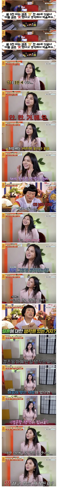

147 · 2 · 6 시간 전 · 원문

수집 당시 댓글 2개
에르가 · 2 시간 전
딱히 뭐 이상한 사람도 아닌데 왤케 적대적임? 그냥 안하는건데 못한다고 하니까 억울하다 <- 이게 뭐가 문제인지 사실 잘 모르겠음. 어린남자 원한다, 나보다 돈많은 남자 원한다, 잘생긴남자 원한다 이렇게 대놓고 얘기한것도 아니고 마음맞는 사람과 결혼하고 싶다 이정돈데남자도 40대에 4명중 1명이 미혼상태고. 40대 초반은 그보다 더 많음 (1985년생 (만 39세 기준) 미혼율: 46.5%)여사도 40대 미혼율이 15%는 됨. 40대에 결혼 안한 사람 생각보다 많음 (위 통계는 이혼해서 혼자인 사람은 제외한 통계임)딱히 이상할것도 없고 그냥 개인의 선택이 된 시대임
↳ 답글 · 삼성전자곱버스 · 1 시간 전
ㄹㅇ 댓글들 ㅈㄴ 패배자들같네
딱히 뭐 이상한 사람도 아닌데 왤케 적대적임? 그냥 안하는건데 못한다고 하니까 억울하다 <- 이게 뭐가 문제인지 사실 잘 모르겠음. 어린남자 원한다, 나보다 돈많은 남자 원한다, 잘생긴남자 원한다 이렇게 대놓고 얘기한것도 아니고 마음맞는 사람과 결혼하고 싶다 이정돈데
남자도 40대에 4명중 1명이 미혼상태고. 40대 초반은 그보다 더 많음 (1985년생 (만 39세 기준) 미혼율: 46.5%)
여사도 40대 미혼율이 15%는 됨.
40대에 결혼 안한 사람 생각보다 많음 (위 통계는 이혼해서 혼자인 사람은 제외한 통계임)
딱히 이상할것도 없고 그냥 개인의 선택이 된 시대임